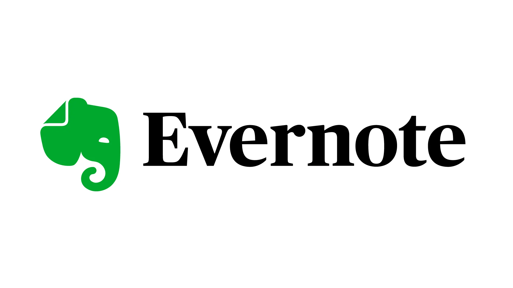
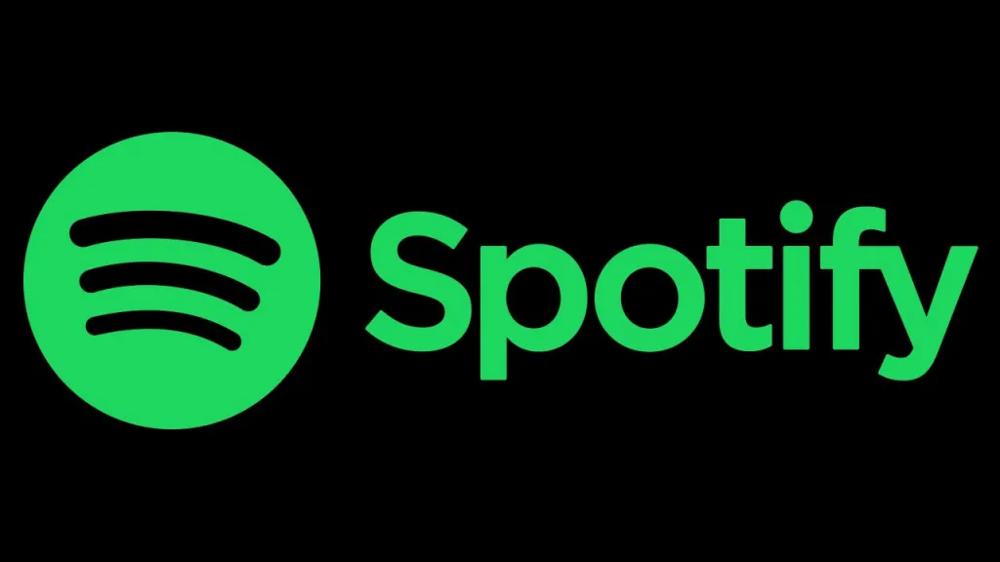

 Aplicación Web para creación de notas con Fecha de lanzamiento del 23 de julio de 2008 desde hace un año Bendig Spoon se encarga del desarrollo de este software.
La principal caracteristica de esta página es la administraci;on de tareas mediante la creación de notas las cuales se pueden administrar en distintas plataformas Algunas de las tecnologías que se pueden encontrar en su desarrollo son:Aplicación Web para aprendizaje de idiomas que tuvo Fecha de lanzamiento del 30 de noviembre de 2011 su desarrollo esta bajo el cargo de Luis von Ahn, Severin Hacker, Antonio Navas entre otros.
La función principal de esta plataforma es la basta cantidad de idiomas dispoonible para aprender a traves de juegos didácticos Algunas de las tecnologías que se pueden encontrar en su desarrollo son: Página Web para reporducción de música en streaming que tuvo Fecha de lanzamiento el 23 de abril de 2006 su desarrollo esta bajo el cargo de Spotify AB.
La función principal de esta plataforma es el servicio de música, pódcasts y videos digitales que dan acceso a millones de canciones Algunas de las tecnologías que se pueden encontrar en su desarrollo son: